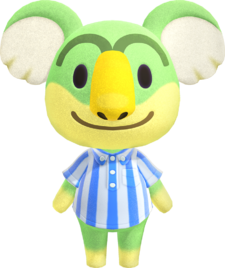
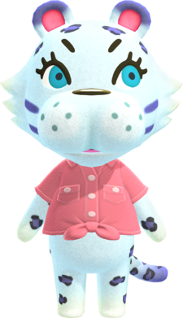
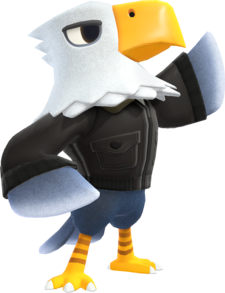
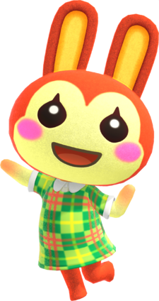
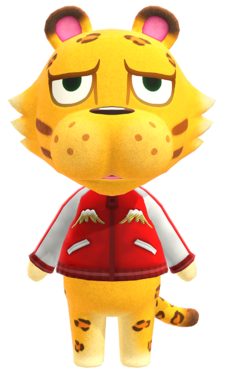
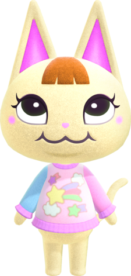
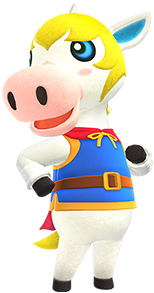
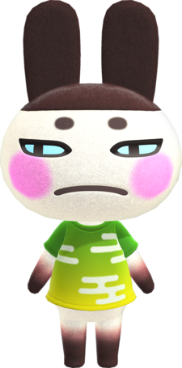
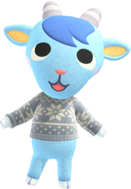
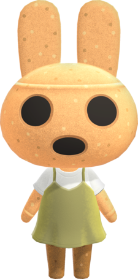

Animal Crossing New Horizons Tier Lists
Villager Tier Lists
What are villagers?
Villagers are animals who move to your city/town/village/island in Animal Crossing games! You can interact with them daily and there are 8 different personalities. Male personalities are lazy, jock, cranky, and smug. Female personalities are normal, peppy, snooty, and big sister. You can have up to 10 villagers living in your city/town/village/island at one time so many people have their dream 10 villagers. Here I will be ranking my top 10 villagers!
1. Lyman
Lyman is a jock koala villager. He isnt the cutest but he was my favorite growing up!
2. Bianca
Bianca is
3. Apollo
Apollo is
4. Bunnie
Bunnie is
5. Leonardo
Leonardo is
6. Merry
Merry is
7. Colton
Colton is
8. Genji
Genji is
9. Sherb
Sherb is
10. Coco
Coco is